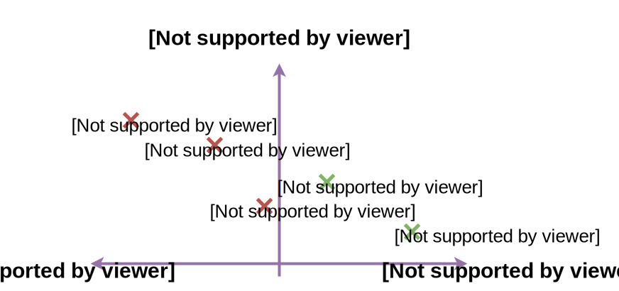
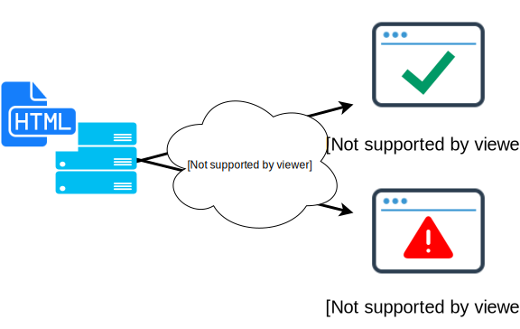
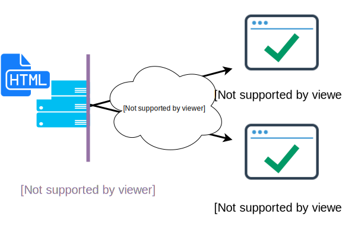

A Novel Solution to Automatically Resolve HTML Compatibility Issues
presented by Albert Yu (albertyu@yahoo-inc.com)
19 October 2015
Adonis Fung and Nera Liu from Yahoo! Paranoids
for HTML5 Dev Conf '15
1.1. HTML 5 is freakin' awesome!!
Standard Standard Standard. But in reality...

- Compatibility issues between HTML4 to HTML5
- Not everyone likes to follow the standard
- Some introduced their own "features" (e.g., IE Conditional Comments, etc...)
We all love HTML5, but not the nightmares...
- Are your HTML work great in older browsers?
- Non-trivial to upgrade from HTML 4 (never like just a doctype change)
Dream?
- Can we write HTML 5 once, deploy everywhere?
- (even including browsers as old as IE7)
The Problem

The same HTML gets parsed inconsistently across different browsers!
Compatibility Issue between HTML 4 and 5 standards
Example: Here, one may forget closing the comment inside the <style> block
<style><!-- CSS </style> <!-- log --> <script>alert('firesOnlyInHTML5')</script>
- HTML5 respects the end tag "</style>", and then render later HTML; versus
- HTML4 considers "</style>" as commented out, and everything is in CSS/style tag
Compatibility Issue Introduced by Non-standard "Features"
Example: Internet Explorer Conditional Comment is supported up to IE9
<!--[if IE]> <script>alert('firesOnlyInIE')</script> <![endif]-->
- HTML5 standard considers everything as inside comment; versus
- IE browser (+versions) renders the enclosed thing as HTML
Possible Causes of HTML Compatibility Issues
- HTML4 vs. HTML5
- Browser quirks (features?), etc...
plus human ignorance and typos
- Developers use the latest browser during development
- Latest browser renders the HTML5 way
- Likely unaware of the potential issues during development!
(note: Saucelabs and Browserstack unit tests may or may not hit the issue...
when developers just lack the knowledge on all potential parsing issues)
Non-solutions (call it related work)
(1) How about a "PERFECTLY-compliant" HTML5 tool: lint? validator?
- A document that's HTML5-compliant can still be interpreted differently in HTML4/older browsers
- Moreover, lint is meant to report errors, but not for solving them automatically
(2) Polyfill?
- Apparently, use JS to emulate a new API feature for unsupported/older browsers
- HTML renders before JS. Hardly can a JS polyfill help with HTML corrections
- Our problem: an HTML can be "mis-interpreted" (perhaps no chance to run script?)
Ignorance Comes with a Cost!
Usability: Different DOM trees across browsers
- UI and visual display messed up
- Inconsistent business logic
Security: Voiding context-sensitive XSS filtering
- Context varies across browsers
- Pwned via XSS if an output filter is applied in an indeterministic context
Let's try systemizing the issues and fixes
Identifications and Verifications of Inconsistencies
- Rounds of "head-damaging" Trials and Errors
- Online Literatures
- Browser Vendor Documentations
- HTML5 Specification (look up "parse errors")
- HTML Fuzzing Tests (similar to shazzer.co.uk)
Hardly exclusive due to the blackbox nature of proprietary browsers
Intelligence backed by our pen-testing team, and (double) bug bounty!
- Let us know what to enhance, get rewards for security bugs!
Systemizations of Inconsistencies
- Comment Precedence in RCDATA
- Comment Precedence in RAWTEXT
- Doctype Enforcement
- IE Conditional Comments
- Syntax/Parse Errors
Browser Scope
- IE7+, Safari 5+, Chrome 30+, and Firefox 30+
- Covered more than 95% of desktop browser market share
- (why not incl. mobile? resource constraints. assumed vendors use the same parsers in desktop/mobile.)
Solution?
Intuition #1: Front-End Engineering
- Engineers likely work with the latest browsers during development and debugging
- End users like to use latest browsers better (unless... html5 conference? :)
- Latest browsers parse using HTML5, so, let's consider it as the INTENDED BEHAVIOR
Intuition #2: Security Engineering
- HTML5 contextual analysis governs what context-sensitive filters to add
- Inconsistently interpreted HTML are subject to XSS/security consequences
===========
So, the norm := HTML5 rules!! Let's assumed as the developers' intent...
Can we enforce the HTML5 parsing standard across all browsers?
Before Canonicalization
After Canonicalization

Auto HTML Canonicalization (Everyone loves automation!)
Design Goals
- Auto rewrite the HTML to enforce the HTML5 parsing standard
- Resulted HTML to be consistently parsed across majority browsers
Design Considerations (upon facing an inconsistency)
- Favor HTML5 parsing standard
- Security (no DOM breaking, help contextual escaping, secure-by-default config)
Applications
- Applicable at/with HTML minify? clean HTML before shipping to browsers
- Realized in our Contextual XSS Escaping framework to ensure security
Inconsistencies (1/5)
Comment Precedence in RCDATA (HTML5 vs. HTML4)
<title> <!-- ... </title> ... ↑ exited <title> as per HTML5
<textarea> <!-- ... </textarea> ... ↑ exited <textarea> as per HTML5
Unlike HTML4 where the end tag does not function if it's commented
<title> <!-- ... </title> ... ↑ possibly still in <title> as per HTML4
<textarea> <!-- ... </textarea> ... ↑ possibly still in <textarea> as per HTML4
Corrections and Underlying Decisions (1/5)
Enforcing HTML5 Comment Precedence in RCDATA
<title> <!-- ... </title> ... ↑ exited <title> as per both HTML4 & 5
<textarea> <!-- ... </textarea> ... ↑ exited <textarea> as per both HTML4 & 5
Enforce the HTML5 parsing standard:
- In RCDATA state, replace "<!--" with "<!--"
- RCDATA understands character reference (< means <)
Therefore,
- To HTML4, it's prevented from entering comment state
- To HTML5, before and after are equivalent (no DOM breaking)
Inconsistencies (2/5)
Comment Precedence in RAWTEXT (HTML5 vs. HTML4)
<style><!-- ... </style> ... ↑ exited <style> as per HTML5
<noscript><!-- ... </noscript> ... ↑ exited <noscript> as per HTML5
<iframe><!-- ... </iframe> ... ↑ exited <iframe> as per HTML5
Similar to RCDATA, the end tag can be commented out according to HTML4
<style> <!-- ... </style> ... ↑ possibly still in <style> as per HTML4
<noscript> <!-- ... </noscript> ... ↑ possibly still in <style> as per HTML4
<iframe> <!-- ... </iframe> ... ↑ possibly still in <style> as per HTML4
similar but obsolete tags are omitted for discussions: <noframes>, <noembed>, <xmp>
Corrections and Underlying Decisions (2/5)
Enforcing HTML5 Comment Precedence in RAWTEXT:
<style><!-- ... <!----></style> ... ↑ exited <style> as per both HTML4 & 5
- In RAWTEXT state (doesn't know charref), prefix "<!---->" before the end tag
- Close opened comment if one forgets to; doesn't hurt if properly closed too
Therefore,
- To HTML4, we always closed comment, if any, to prevent enclosing </style> in it
- To HTML5, no DOM breaking before and after too:
(a) All CSS rules in <style> tag run properly
(b) <noscript> tag renders properly when script is (dis-)abled
(c) <iframe> tag is able to drop everything being enclosed
Inconsistencies (3/5)
Doctype (HTML5 vs. HTML4)
<!DOCTYPE html> HTML 5 standard
Unlike HTML4, which have multiple declarations
<!DOCTYPE HTML PUBLIC "-//W3C//DTD HTML 4.01//EN"
"http://www.w3.org/TR/html4/strict.dtd">
<!DOCTYPE HTML PUBLIC "-//W3C//DTD HTML 4.01 Transitional//EN"
"http://www.w3.org/TR/html4/loose.dtd">
<!DOCTYPE HTML PUBLIC "-//W3C//DTD HTML 4.01 Frameset//EN"
"http://www.w3.org/TR/html4/frameset.dtd">Corrections and Underlying Decisions (3/5)
Enforcing the HTML5 Doctype:
<!--DOCTYPE HTML PUBLIC "-//W3C//DTD HTML 4.01//EN"
"http://www.w3.org/TR/html4/strict.dtd"--><!DOCTYPE html>
Therefore,
- Trivial for the sake of HTML5 conformance
- Let browser knows the document welcomes HTML5 parsing
- Performance gain for not tokenizing doctype states (attr. to 16/69 HTML5 states)
Inconsistencies (4/5)
IE Conditional Comments (Non-standards)
<!--[if IE]> HtmlRenderingInIE but CommentInOthers <![endif]-->
is considered as comments in HTML standard
The following have two bogus comments as per HTML5
<![if lt IE 8]>
HtmlRenderingInOthers (that dont know cond. comments) but CommentInIE
<![endif]>
Reference: msdn.microsoft.com/en-us/library/ms537512.aspx
Corrections and Underlying Decisions (4/5)
Enforcing HTML5 Rendering:
<!--[if IE] > insideCommentForAllBrowsers <![endif]-->
<!--![if lt IE 8] --> HtmlRenderingForAllBrowsers <!--![endif] -->
- In comment state, insert a space between "]>"
- In bogus comment state, convert to comment (i.e., <!x> ⇒ <!--!x-->) first
- Secure-by-default, as they can possibly originated from untrusted source
Therefore,
- Again, after all, all browsers parse it consistently in the HTML5 way
- Configurable. Turn it off if that's what intended
Inconsistencies (5/5)
Syntax/Parse Errors (Non-standards)
<a href="hello" <b> ↑ Safari 5 makes it <a ...><b>; HTML5 won't create <b> tag
<a href=='<body onload=alert(1)> Typos? Only IE7 and 8 fire alert(1)
<input value=`hello`> Value contains "hello" in IE, "`hello`" in HTML5
<input value="hello"class="A"> Typo?
Source of truth: Well-documented Parse Errors in www.w3.org/TR/html5/syntax.html#tokenization
- Too many to list out all of them, refer to here for corrections in place
- Not necessarily all parse errors lead to inconsistent parsing. But let's clean them!!
Corrections and Underlying Decisions (5/5)
Enforcing HTML5 Rendering:
<a href="hello" b> ↑ only <a> tag as per both Safari 5 and HTML5
<a href=='<body onload=alert(1)> parsed it the HTML5 way also in IE 7 & 8
<input value=`hello`> consistent input.value across IE and others
<input value="hello" class="A"> typo fixed
Therefore,
- Favored and observed the HTML5 parsing effect
- Even old browsers can parse it the HTML5 way (e.g., consistent DOM & value)
- Typo fixes too
Demo and Applications
Demo
In demo.html (copied from the slide before last),
<a href="hello" <b>
<a href=='<body onload=alert(1)>
<input value=`hello`>
<input value="hello"class="A">
Commands
cat demo.html
./context-parser/bin/canonicalizr.js demo.html
Security Use Case Analysis (1/3)
Contextual XSS Output Filtering
Design Principles
- In an HTML template, output {{placeholder}}s are assumed untrusted
- Perform HTML5 static analysis to determine contexts of the {{placeholder}}s
- Automatically add context-sensitive filtering to the {{placeholder}}s
As a result
- Able to treat "javascript:" in URIs, CSS strings, HTML quoted values, etc...
Security Use Case Analysis (2/3)
An vulnerable example:
<style><!-- CSS </style> <!-- log --> {{placeholder}}
HTML5 parses {{placeholder}} as in DATA state, so let's apply the DATA-context filter?
Nevertheless
- Older browsers (e.g., IE7/8/9) considers {{placeholder}} as in CSS context
- Attacker can thus exploit it by injecting "expression(alert(1))"
- DATA-specific filter BYPASSED, XSS resulted
- The filter is meant to escape < to prevent tag injection but NOT for CSS filtering
Security Use Case Analysis (3/3)
Secure-handlebars actually motivated this work
- Auto HTML Canonicalization "secured" secure-handlebars :)
- Offline (or one-off then cached) process for filtering + canonicalization
- Proven useful in our security use case
- Yahoo! cares about online security of our users
The Canonicalizr
Usage, as simple as...
git clone https://github.com/adon-at-work/context-parser.git
./context-parser/bin/canonicalizr.js test.html
Open-sourced:
github.com/adon-at-work/context-parser/blob/master/bin/canonicalizr.js
Deployability with HTML minify? (1/3)
Some popular HTML minify solutions
(1) Google ModPageSpeed for Apache
- "deployed across 100,000+ web-sites, and provided by ... DreamHost, GoDaddy, EdgeCast, and others"
(2) html-minifier for Node.js
- "503,048 downloads in the last month", most npm popular?
(3) Will Perry HTML Minifier
(4) HTML Compressor
Deployability with HTML minify? (2/3)
Ideally
- Our canonicalizr can sit right after html minify (canonicalizr never add junk)
- But perhaps, our industry doesn't understand HTML5 well enough...
Evaluated particularly the HTML comment removal feature
- Supposedly, should preserve the DOM before and after minify
- Consideration: HTML5 rules! as that's how the latest browsers interpret HTML
- None has completely followed HTML5 for comment removal
Deployability with HTML minify? (3/3)
An example (before, after)
# Before HTML minification
<noscript><!-- hello </noscript> <!-- log --> ... <script>alert(1)</script>
# After minified (everything is now put inside noscript, if not removed)
<noscript> ... <script>alert(1)</script>
(note: try swapping <noscript> with <iframe> or other RAWTEXT tags)
Insights? Support html minify as a future work?
Conclusions and Future Work
Contributions
- Let developers focus on coding and testing in HTML5 (using latest browsers)
- HTML compatibility issues and errors automatically and gracefully resolved
Future Work / Collaboration Opportunities
- Let us know if we missed anything; PRs Welcome
- More handy for your use (now perhaps specific for our use cases)
- Performance Improvement / Extend beyond UTF-8
- HTML Minify
- CSS Canonicalization: CSS String, Contextual removal of CSS expression(), etc
Brought to you by
Acknowledgment
- Albert Yu (who pioneered the work - HTML5 Context Parser)
- Stuart Larsen
- Alaa Mubaied
- Aditya Mahendrakar
- Christopher Harrell
- Christopher Rohlf
Thank you
Adonis Fung and Nera Liu from Yahoo! Paranoids
for HTML5 Dev Conf '15
Use the left and right arrow keys or click the left and right
edges of the page to navigate between slides.
(Press 'H' or navigate to hide this message.)